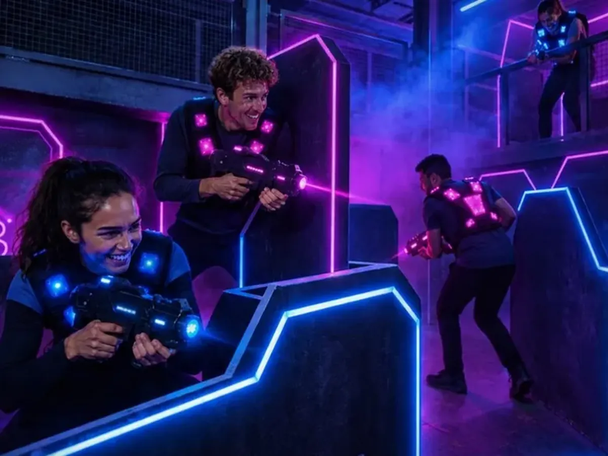

Karten, paintball, arcade en karaoke in Nijmegen
Bijgewerkt op 24 november 2026.
Een avond karten met vrienden, paintballen voor een vrijgezellenfeest of gewoon een paar uur gamen en zingen. In Nijmegen kan het allemaal. Over bowlen, lasergamen en escape rooms schreven we al eerder. Hier lees je waar je terecht kunt voor de rest.

Zo hebben we gekozen
We lazen in november 2026 de websites van de uitjes in onze bedrijvengids. Prijzen en openingstijden kunnen veranderen. Ga je met een groep, reserveer dan altijd vooraf.
Karten
Planet Awesome: karten en nog veel meer
Planet Awesome aan de Energieweg is de plek om te karten in Nijmegen. Je rijdt er indoor, ook met het arrangement Infinity Karten. Onder hetzelfde dak kun je bowlen, lasergamen, glow-in-the-dark golfen, karaoke zingen en arcadegames spelen.
Planet Awesome is van dinsdag tot zondag open, in het weekend tot middernacht. Het is er druk, dus reserveer vooraf. In december is er een kerstarrangement met twee activiteiten en een buffet voor 65 euro per persoon.
Goed voor: een groep waarin niet iedereen hetzelfde wil.
Paintball en airsoft
Paintball Nijmegen: vijf speelvelden
Paintball Nijmegen heeft vijf speelvelden op een ruim terrein aan de Meeuwse Acker in Dukenburg. Je kunt er ook airsoft en survival doen, en er is kinderpaintball. Het veld is het hele jaar open, maar je moet reserveren, vanaf zes personen.
Budget Paintball kost 20 euro per persoon, voor ongeveer twee uur spelen met uitrusting, begeleiding, drinken en 150 paintballs. Bij de andere pakketten kost 100 extra paintballs 5 euro.
Goed voor: een vrijgezellenfeest of een stoer uitje met vrienden.
Alleen airsoft? Op hetzelfde adres zit Area24 Airsoft.
Arcade, gamen en VR
Pop Culture Arcade: gamen in hartje Nijmegen
In Pop Culture Arcade in het centrum speel je klassieke arcadegames en nieuwe favorieten, van airhockey tot racespellen. Reserveren mag, maar hoeft niet. Er zijn ook arrangementen voor groepen en combi-deals.
Goed voor: een date of een middag met vrienden.
Virtual reality spelen kan bij EnjoyVR. En bij Olround aan de Heyendaalseweg speel je naast bowlen ook Prison Island, een parcours van kleine ontsnappingskamers.
Poolen en darten
Café Pool: al 20 jaar het poolcafé van Nijmegen
Café Pool in de Van Welderenstraat is al 20 jaar een vaste plek om te poolen, darten en airhockeyen. Op verzoek kun je gratis de poker- en beerpongtafel gebruiken. Voetbal en darts zijn er op groot scherm.
Het café is elke dag open vanaf de avond, op zaterdag en zondag al vanaf 14.00 uur. Voor groepen passen ze de openingstijden aan.
Goed voor: een potje pool met een biertje erbij.
Karaoke
Nightingale Karaokebar: privékamers met een thema
Bij Nightingale huur je een eigen karaokekamer. Elke kamer heeft een thema, zoals Parijs, Bali, Miami, Marrakesh of Caïro. In de bar ernaast drink je cocktails, wijn of speciaalbier.
Goed voor: een verjaardag of vrijgezellenfeest met je eigen groep.
Roxy's Karaokebar: zingen voor publiek of apart
Bij Roxy's staat de karaokeset tijdens de gewone uitgaanstijden altijd aan. Je kunt zingen voor iedereen in de zaak, of een eigen ruimte huren. De Japanse kamer is voor groepen tot 16 personen en kost 17,50 euro per persoon voor twee uur, met een maximum van 175 euro. De discozaal beneden is voor 16 tot 80 personen.
Goed voor: wie gewoon wil binnenlopen en meezingen.
Ook karaoke: Karaoke Café van Deelen.
Trampolinespringen
You Jump: trampolinepark aan de Industrieweg
You Jump, voorheen Jumpsquare, heeft 14 attracties, waaronder Valo Jump gaming en de Bounce Run. Er is een apart deel voor de allerkleinsten (Mini Jump) en je parkeert gratis. Populaire tijden zijn snel vol, dus koop je tickets online.
Goed voor: een kinderfeestje of een sportief uitje.
Zin in iets anders? Lees ook waar je kunt bowlen, lasergamen, boulderen of een escape room doen.
Veelgestelde vragen
Waar kun je karten in Nijmegen?
Bij Planet Awesome aan de Energieweg. Je kart er indoor, en kunt het combineren met bowlen, lasergamen, glow-golf of karaoke.
Wat kost paintballen in Nijmegen?
Bij Paintball Nijmegen kost Budget Paintball 20 euro per persoon, inclusief uitrusting, drinken en 150 paintballs. Reserveren kan vanaf zes personen.
Is er een arcadehal in Nijmegen?
Ja, Pop Culture Arcade in het centrum. Planet Awesome heeft ook arcadegames.
Waar kun je karaoke zingen in Nijmegen?
Bij Nightingale Karaokebar en Roxy's Karaokebar huur je een eigen kamer. Bij Roxy's kun je ook gewoon binnenlopen en zingen. Planet Awesome heeft ook karaoke.